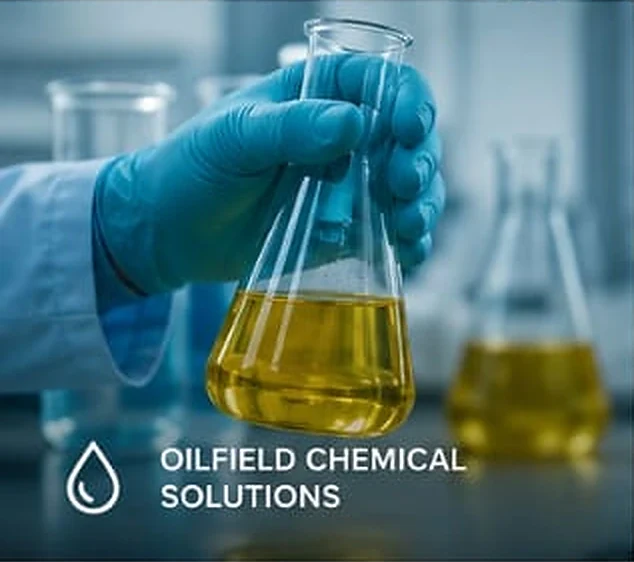
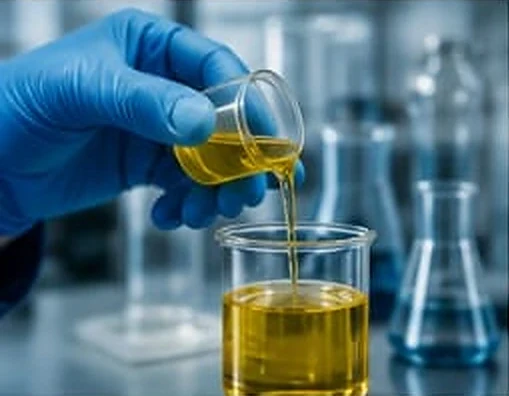
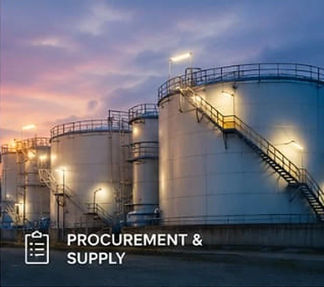
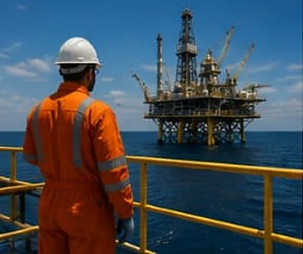
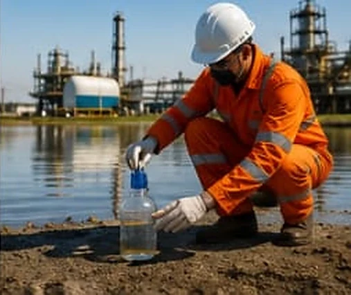
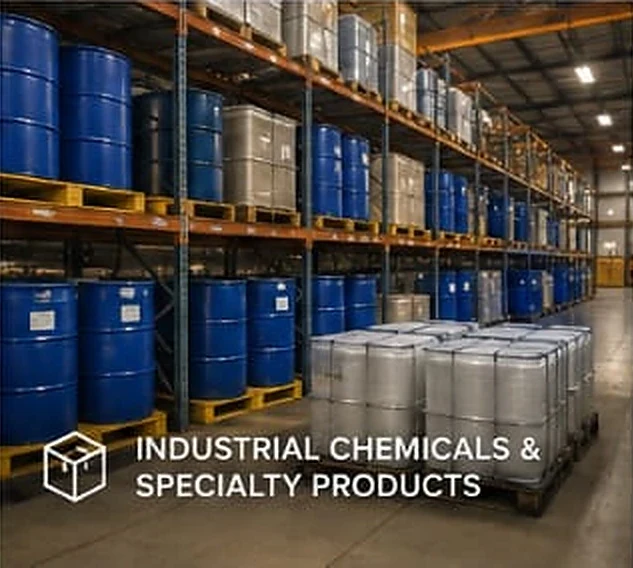

01
Technical expertise
Our team combines industry knowledge, laboratory capabilities and field experience to provide practical solutions.
Our services
We provide innovative, reliable and cost‑effective solutions to the oil & gas, energy and industrial sectors. Our services combine technical expertise, quality products, laboratory capabilities and field support to help clients improve operational efficiency, productivity, safety and asset performance.
Specialty chemicals and chemical treatment solutions designed to address a wide range of oilfield production and processing challenges. We support clients from chemical selection and laboratory evaluation through field trials, application, monitoring and performance optimisation.

Our laboratory services support product qualification, chemical performance evaluation, crude oil characterisation and operational decision‑making. The approach combines recognised testing procedures, reliable laboratory practices and technical interpretation to deliver meaningful results.

Plate 04 Sample preparation ahead of bottle testing
Reliable sourcing and supply of the products and materials required for oil & gas and industrial operations. Through our supplier and OEM network we help clients source quality products while providing responsive commercial and technical support.

Technical support aimed at improving production performance and managing chemical‑related operational challenges. We work closely with clients to understand their operating conditions and develop practical solutions suited to their specific requirements.
Plate 05 Injection point and flow control, where a treatment programme is monitored
Our field services bridge the gap between laboratory evaluation and real‑world operational performance. The approach is focused on generating reliable performance data that supports informed operational and commercial decisions.

Plate 06 Surveillance during a chemical field trial
We support industrial and oilfield operations with solutions for water quality, environmental monitoring and process‑related challenges — from sampling and analysis through to treatment chemical supply.

Plate 07 Environmental sampling for produced water analysis
Beyond the oil & gas sector, we provide specialty and industrial chemicals for manufacturing, processing, water treatment and other industrial applications.

Offshore and coastal operations need product, equipment and people delivered to a location that moves. We provide marine logistics and marine‑grade chemical supply in support of offshore production and vessel operations.
01
Our team combines industry knowledge, laboratory capabilities and field experience to provide practical solutions.
02
We focus on quality products, dependable sourcing, proper testing and consistent service delivery.
03
Every operation has unique requirements. We develop solutions around our clients’ specific technical and operational needs.
04
We continuously seek improved technologies, products and methodologies that deliver measurable value.
05
From product sourcing and laboratory evaluation to field trials and performance monitoring, we support the whole solution lifecycle.
—
To provide solutions that enhance performance, improve efficiency and create lasting value. We are not just a supplier — we aim to be a trusted technical partner.